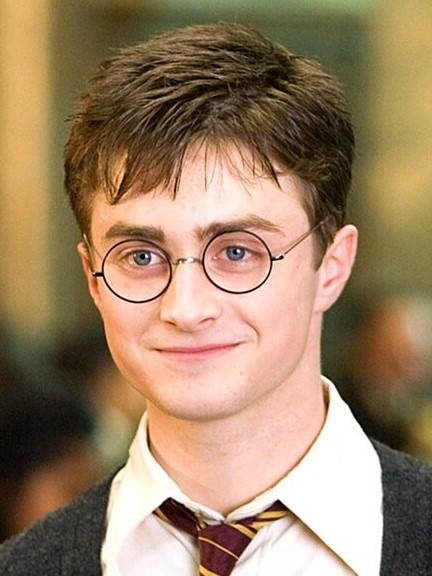

|

Potter
Harry
12 square Grimmaurd, Londres
31 juillet 1980
Formation & Diplôme
|
- 1996 - 1997 Sixième année à Poudlard
- Juillet 1996 Brevet Universel de Sorcellerie Élémentaire (BUSE)
- 1995 - 1996 Cinquième année à Poudlard
- 1994 - 1995 Quatrième année à Poudlard
- 1993 - 1994 Troisième année à Poudlard
- 1992 - 1993 Deuxième année à Poudlard
- 1991 - 1992 Première année à Poudlard
Expérience Professionnelle
|
- 1997 - 1998 Membre de l'Ordre du Phénix
- 1995 - 1996 Professeur de l'Armée (secrète) de Dumbledore
- 1994 - 1995 Champion du Tournoi des Trois Sorciers
Compétences
|
- Fort en duel, usage de sortilèges puissants
- Capable de créer un Patronus corporel
- Parle le Fourchelang
- Vol parfaitement en balai
Informations complémentaires
|
- Est un sorcier
- Est un Griffondor
- Aspire à devenir Auror
- A détruit le Seigneur des Ténèbres
|